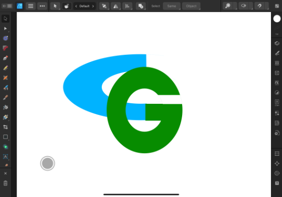
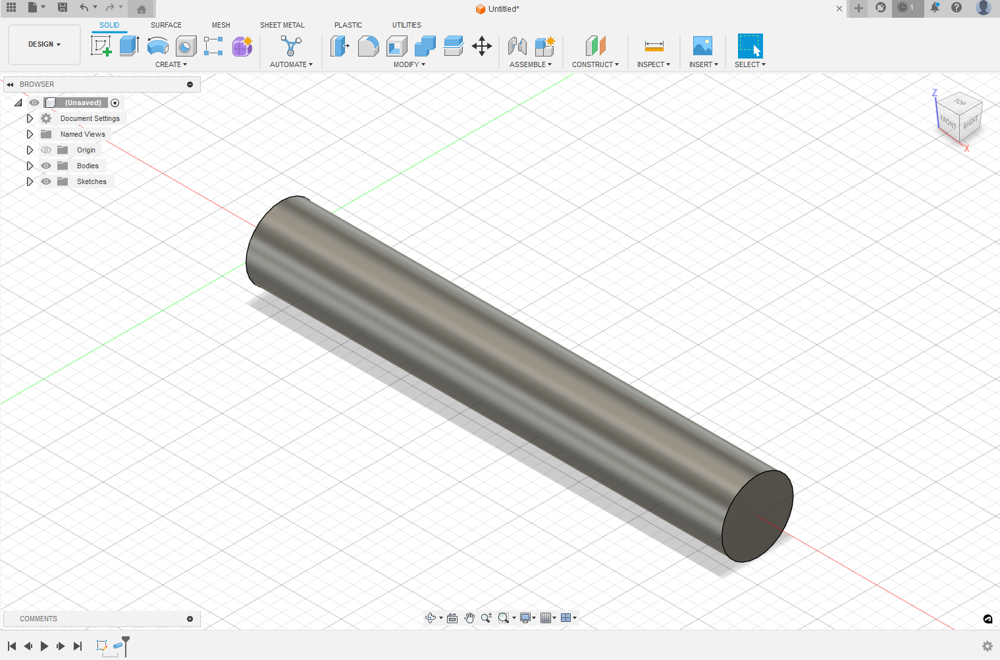
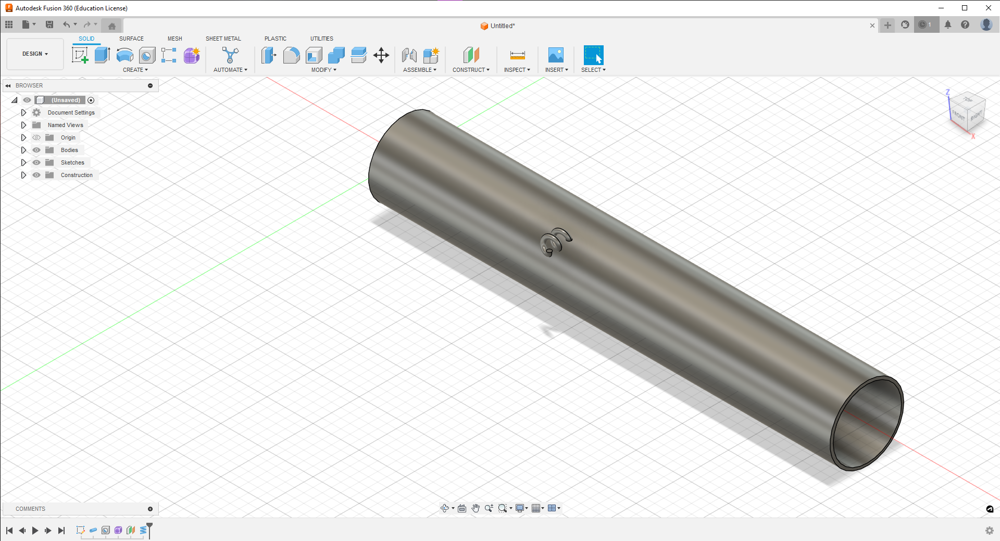
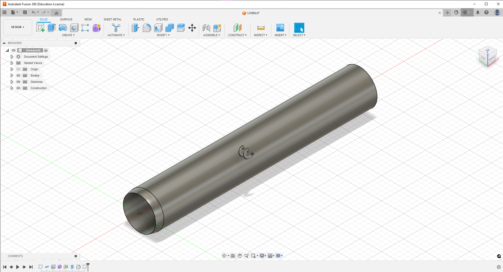

Computer-aided design
For this project I Affinity Designer 2 for Ipad to create my logo, and used Fusion360 to plan out the design of our project.

For my logo I simply used my initials and changed them into my family's colors as to replicate my dad's logo by connecting the C for Christopher to the G for Garcia.
I started my design for in fusion360 since I had previous experience using it, and I felt more comfortable accesssing and maneuvering. Thus I first began by creating a line long enough to be similar to someone's forearm and then used the create a pipe feature to start the design.
Following creating a pipe I made used the hole feature to make a hole straight through the pipe in which the forearm would fit, and I also used the coil feature to create a string like attachment which would be used to tighten or loosen the sleeve depending on the user's forearm size.
The final thing I added to the projected design was using the fillet feature at the end to create a softer look to where the writs would be located as that spot would provide cushioning to the wrist.
